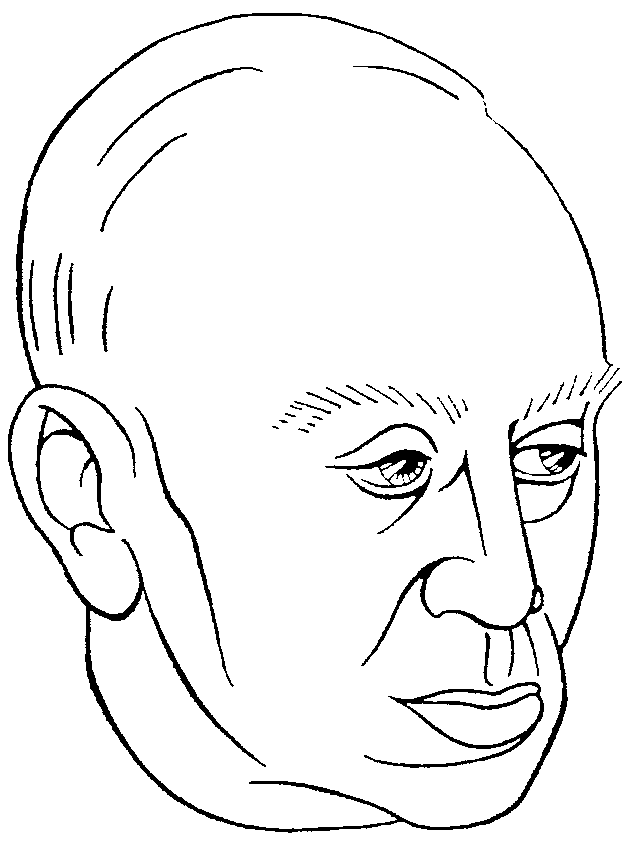

> nieuwsbrief > 2008- 1
Inhoud
Eens te meer nadert de
jaarwisseling met rassé schreden. Voor de
penningmeester brengt dit mee om ervoor te zorgen dat de hernieuwing
van de
bijdragen andermaal vlot verloopt.
In ruil voor een
ongewijzigde basisbijdrage van 25 verzekert u
zich ook in 2008 van een abonnement op onze Nieuwsbrief
Joris van Severen en van het reeds 12e Jaarboek
Joris van Severen zijn persoon, zijn gedachten, zijn
invloed, zijn werk. Als steeds hopen we er andermaal op dat
eenzelfde
aantal leden spontaan deze basisbijdrage afronden tot het ronde
bedrag van
30 . Zij immers maken het ons mogelijk om extra-initiatieven te
ontwikkelen, als b.v. het voorbije colloquium en de publicatie van
brochures
naast de Nieuwsbrief en het Jaarboek. Uw
betaling graag via rekening 000-1705814-69 (vanuit het buitenland:
IBAN: BE71 0001 7058 1469. BIC: BPOTBEB1) t.n.v. Studiecentrum Joris
van Severen - vzw, B.8900 Ieper..
Op Canvas bracht
Keerpunt het
nooit eerder verfilmde oorlogsverhaal van het beruchte Bloedbad van
Abbeville.
Het docudrama reconstrueert op
de originele locatie het lot van 78 politieke gevangenen uit België die
in de
Franse stad terechtkwamen op 20 mei 1940. Onder hen bevond zich
Verdinasoleider
Joris van Severen, die samen met 20
anderen zonder enige vorm van proces en op basis van een vaag en
onterecht
bevel werden vermoord door Franse militairen. De 78 mensen waren in de
kelder
van de muziekkiosk opgesloten en bewaakt door Franse militairen. Het
waren
gevangenen die in België werden gearresteerd en overgeleverd aan de
Fransen
vanwege de snelle Duitse opmars door België. Ze behoorden tot de
duizenden
verdachten die op 10 mei 1940 werden opgepakt omdat ze een gevaar voor
de staatsveiligheid
zouden vormen. De overgrote meerderheid van de 78 van Abbeville bleek
later
totaal onschuldig te zijn.
In het vorige nummer van
onze Nieuwsbrief
brachten we de samenvattingen van de vier naar voor gebrachte
referaten.
Daaruit bleek het hoog gehalte van de wijze waarop de onderscheiden
themas aan
bod kwamen. Aan kwaliteit ontbrak het dus geenszins. Des te
merkwaardiger dan
ook de geringe publieke belangstelling waarop dit 5e colloquium kon
rekenen
en nog merkwaardiger het uiteindelijk verstek geven van 1/3 van de
ingeschreven
deelnemers! Wie er wel was zal getuigen dat de afwezigen het
spreekwoordelijke
ongelijk aan hun zijde hadden.
De aanwezigen zal vooral
het indringend referaat van Romain Vanlandschoot
in herinnering blijven. Maar ook
Feit blijft niettemin dat
we ons binnen het Studiecentrum Joris van Severen
en evenzeer binnen de Stichting Joris van Severen
ernstig
zullen dienen te beraden over de vraag naar de zinvolheid van het
verder zetten
van ons colloquiuminitiatief.
Buitenkans
andermaal
voorbehouden voor de leden
Andermaal kwamen we in het
bezit van een reeks interessante tweedehandboeken,
waarvan de verkoopopbrengst aan het Studiecentrum ten goede komt. We
stellen
deze resterende publicaties dan ook graag ter beschikking van onze
leden tegen
de vermelde prijs (te verhogen met de verzendkosten):
2.1. Hendrik Elias, 25 jaar
Vlaamse Beweging 1914-1939, Antwerpen 1969, 4 boekdelen, gen.,
samen 948
p.: 25
2.2. Luc Delafortrie, Joris van
Severen en de Nederlanden, Zulte, 1963, gen., kaft licht
geschonden, 5
2.5. Lodewijk Dosfel, Ter
Waarheid, parelen uit zijn werken, Tielt, z.j., 167 p., 3
2.6. Willem Meyers e.a., Hoe
België W.O.II overleefde, Brussel, 1975, geb., 350 p.: 3
Verzendkosten: 1
boek: 2,60 : 2 boeken: 3,64 ; 3 boeken: 4,30 ; méér dan 3 boeken:
8,60 .
Bestellen met opgave van het gewenste boeknummer, via overboeking van
het
verschuldigd bedrag (inclusief verzendkosten) op rekening
000-1705814-69 t.n.v.
Studiecentrum JvS, 8900 Ieper.
in hart en ziel van wie zijn
hoge wil
nog dragen, lang, de nadagen
voorbij,
het broze lijf vermoord, de
kameraden sneven..
Maar zijn gestalte staat en
gaat ons voor
door t ontij van de
schaamteloze onwetendheid
doorheen en boven menigten,
verdwaald en goor
verloren en verdoofd, melaats
van onverschilligheid.
Wij treden in zijn spoor van
schoonheid en verweer
en zien hoe toch weer jeugd komt
aangetreden
aan wie een trouwe kern de
waarheid heeft beleden:
van ploeg en rad en zwaard een
eindelijke wederkeer.
En samen staan wij rond het
graf geschaard
aan Dietslands verste zoom,
waar hij naar voren moest treden,
hier valt het ontij van ons af,
de trouw beleden,
zijn geest herrijst, de
wortel
bleef bewaard.
Uit:
Mijmeringen van een Oud-Dinaso
G. Raymond
Demeyere, Brugge
Het is
opvallend,maar hoe ouder je wordt hoe meer neiging je vertoont om
achterop te kijken. Dit komt wellicht omdat je beseft dat de toekomst
je nog zo
weinig te bieden heeft... Ik behoor nu eenmaal tot het uitstervende ras
van de
oud-Dinasos. Zo vraag ik me dan ook dikwijls af wat mij als jongeling
zo in
het Verdinaso heeft weten te boeien.
De interesse
voor de Vlaamse beweging was hier uiteraard niet vreemd aan. Of gaf de
keuze
van een beweging die aan haar leden zoveel eisen stelde. hier de
doorslag? Was
het de zucht naar het elitaire of de sterke drang om je in dienst van
uw
volksgenoten te stellen? Bij de jeugd is er immers ruim plaats voor
idealisme.
Het was
beslist de opvoedende rol van die beweging die hier een doorslaggevende
invloed
had Wij wilden van het boertige gedoe af en snakten naar stijl. Het Plus est en vous was ons
leitmotiv.
Joris van
Severen bracht ons de hekel bij voor wat hij definieerde als de
devaluatie van
de woorden wat ook meestal uitmondt in een devaluatie van de
waarden... Hij
leerde ons positief te denken en afscheid te nemen van dat storend
negativisme
dat ons volk kenmerkte en vertrouwd te raken met het begrip
realpolitik
waarvan de nieuwe marsrichting een emanatie was.
De tien
geboden opdreunen is een makkie maar doen wat je hoort te doen blijft
een zware
opgave. Is het niet ergens in de oude catechismus dat er sprake is van
een
merkteken in de ziel? En zo behoorden wij tot een soort getekenden al
klinkt
dit misschien wat pretentieus...
Wij werden
hierin gesterkt door de demoliberale janboel die dertiger jaren
ontsierde. Wij
droomden van Dietse grootheid en een herwaardering van het Prinsenvolk
en
walgden gewoon van loze beloften en holle frasen en snakten naar een
betere
toekomst. Laat dit dan naïef klinken maar gun mij dan toch die droom...
Heil
Dinaso!
Sur nos grandes
activités annuelles au Château Coloma, à
Leeuw-Saint-Pierre, plane encore la grande ombre de Louis Gueuning
(1898-1971),
qui y avait installé son Collège Albert et Isabelle. Il la dirigé
durant près
de vingt ans, avec lassistance de son fils Pierre et de notre ami
André Delay,
tous deux philologues classiques comme lui-même. Cest à ce gardien de
la
pensée de Joris van Severen - il avait fondé un Ordre de Joris van
Severen avec
un mouvement de jeunesse - que lassociation Oranjejeugd et
 Louis
Gueuning, pentekening Jef Goethals
La dernière
livraison de la belle lettre trimestrie1le de
contact du centre détudes Joris van Severen (11e année, 1er trimestre
2007)
reproduit un passage du livre de Cécile Vanderpelen-Diagre Ecrire
en
Belgique sous le regard de Dieu. - La littérature catholique
belge dans
lentre-deux-guerres (éditions Complexe, 2004 ISBN 2-8048-0025-3)
qui
contient nombre dinformations intéressantes sur les relations entre
identitaires belges des deux communautés, dont un chapitre Louis
Gueuning
et
Cependant, à
terme, Gueuning ne peut nouer des liens
constructifs avec les régionalistes, son attachement à lunité
nationaie étant
incompatible avec toute velléité séparatiste. Ainsi sexplique son
adhésion,
pour le moins singulière, en 1937, à la pensée de Joris van Severen,
perçu
comme garant de lunité nationale. En dépit de son nationalisme
flamingant
originel1 , le leader de la patrie thioise a gardé de son
enseignement au collège Sainte-Barbe à Gand (alors francophone) une
profonde
vénération pour la langue de ses deux maîtres: Charles Maurras et René
de
Au-delà de
toutes les raisons plus ou moins politiques ou
pragmatiques quon peut alléguer pour comprendre cette alliance, il
semble
quelle sexplique essentiellement par une affinité intellectuelle. Les
deux
hommes partagent un goût pour les cultures helléniques et latines, la
grandeur,
lautorité et lordre catholique, et ils ont une commune aversion pour
le
régime parlementaire. A linstar de Louis de Lichtervelde, de Charles dAspremont-Lynden et surtout de Pierre
Nothomb, Gueuning est très sensible au projet de van Severen de mettre
en place
un état aristocratique dirigé par une élite, non plus de sang, mais de
qualité (sic) par lesprit, le travail et lhéroisme.
_____________________
1 En 1928, Joris van Severen alors député avait crié
en pleine Chambre des Représentants:
Bron:
Renaissance Européenne. Kwartaalblad
van Les amis de
Opmerking
van de Nieuwsbrief-redactie: de in
de voetnoot aangehaalde uitroep over
Waarom Nogmaals Joris van Severen?
Rudy Pauwels
De tijd die wij
beleven, is een tijd waarin wij meer en meer beseffen dat wij bestaan
in een
universum dat voortdurend in beweging is, maar klaarblijkelijk volgens
een
orde, een kracht die tot evenwichtigheid leidt tussen eensdeels
aantrekking,
anderdeels afstoting.
Wij zijn daarvan
getuigen zoals de Grieken het reeds waren tijdens de 6e en vooral de 5e
eeuw
voor Christus. De kosmos is inderdaad eeuwig.
Op deze vaststelling
ontwikkelde zich eensdeels de platonische dialectiek van de Ideeën,
van het
goede en het schone, anderdeels de fysica, de natuurkunde van
Aristoteles,
die op haar beurt, tot een metafysica leidde. Dit zou één van de
pijlers worden
van het besef van de bovennatuur in de Westerse denkwereld.
De tweede pijler zou
degene worden waarrond het Oude en het Nieuwe testament tot stand
kwam Het
Woord was van God en het Woord werd God - die tegenover de Griekse
kosmische
denkwijze uitging van het aardse, de tijd en de ruimte waarbinnen
mensen
leefden. Hoe waren die er gekomen? Waarom waren die er gekomen? Was het
alleen
om door hun dood in de biologische vervanging van steeds betere
exemplaren
te voorzien, in éénzelfde grote beweging van progressie en eeuwige
wederkeer?
De mensen en hun
geschiedenis vormden aldus het voorwerp van een denkwereld die de
natuur en de
bovennatuur in verband brachten met het aardse leven. In voortzetting
van
Plato zou Augustinus, en in voortzetting van Aristoteles zou Thomas van
Aquino
aldus een nieuwe inbreng betekenen op de denkbodem die de bodem van de
Westerse
beschaving zou worden, waarvan hetgene wat overbleef de Westerse
cultuur zou
vormen: de wereldse Civitas en de Civitas Dei.
Maar ook in de
huidige tijd van het centrale bewustzijn van het planethologische, de
niet te
stuiten gedachte van het, na de nodige tijd, waar alles begonnen is en
alles
steeds herbegint: Le Retour
Eternel!
Van het begin van de
5e eeuw, over de 13e eeuw tot de 19e eeuw ontwikkelde zich, midden deze
beschavingen en culturen, een kerk. Een kerk die het midden moest
houden tussen
radicaal-conservatieve, revolutionair reformatorische en
traditionalistisch-progressieve gelovigen; een kerk die, om te blijven
bestaan,
evolueerde met haar elitisme (monastiek, mystiek, reformatorisch) en
haar
eeuwenlang bewaard multitdualisme: het Gods-volk.
De kerk was aldus
een universeel instituut, een instelling met haar dogmas, haar moraal
en haar
sacramenten; met haar waarheden die a-priori dienden aanvaard te
worden, haar
deugden die dienden beoefend te worden, haar geboden waaraan diende
gehoorzaamd
te worden. Kortom een programma dat, bepaald en gecodificeerd, langs
een
gehiëarchiseerd korps en vastliggende activiteiten (zondagsmis, enz.)
diende te
worden gerealiseerd. Het was die Kerk die zich diende uit te strekken
over de
gehele wereld en daartoe aansloot bij de wereldse machten, in de
verwachting
van het Hemelse Rijk.
Maar diezelfde kerk
was aldus ook de levende kerk, de beleving van een geloof, een
credo
symbool van een gemeenschappelijk beleefd geloof, gedragen niet enkel
door de
leden van een gespecialiseerde corpus, maar door het geheel van
eenvoudig te
beleren gelovigen: het type, het model van wat genoemd kan worden een
katholiek.
De kerk was, ten
derde, een eigen geestelijk en cultureel patrimonium, waar de
fundamentele
structuren van het leven op een hoger vlak gebracht werden in naam van
God - de
Ignatiaanse visie op de mens.
De spirituele
hoogtepunten van de mens, maar ook de liturgie, de sacramenten, het
gebed, de
zegeningen, de leer van goed en kwaad, de solidariteit van de levende
en de
dode zielen in hun uiteindelijk, enig mogelijke gelijkheid afgewogen op
de
weegschaal van de opperste rechtvaardigheid en liefdevolle billijkheid.
De kerk
in haar verrukkelijke esthetiek van de Bergrede. De kerk van de
Middeleeuwen
de Vlaamse Primitieven! De kerk van de Contrareformatie. De kerk van de
zekerheden en van de veiligheid.
Die Westerse
beschavingen en culturen, die universele kerk, zouden af te rekenen
krijgen met
een strijd tegen God (18e eeuw) en daarna met het vergeten van God
(19e
eeuw).
De 20e eeuw zou aantonen
hoe, na het verdwijnen van God, ook de mens kan verdwijnen en iedere
humane
opvatting. Cf. Emile Poulet, Eglise contre
Bourgeoisie, Berg International, 2006, p. 34 vgl.
Na het drama van de
20e eeuw zou de geschiedenis een wereldgeschiedenis worden,
springplank naar
een planetarische visie, die de kosmos reeds een materieel uitzicht
gaf. Met
een toenemende snelheid werd vastgesteld dat de structuren die niet aan
de
nieuwe tijd voldeden, eenvoudig voorbijgestreefd waren en dienden
vervangen te
worden door totaal andere, door voor het eerst volledig
nieuw-uit-te-denken
vormen van politiek, van sociale en economische productie, consumptie
en
distributie. Van welk nut zouden evenwel de sinds eeuwen gegroeide waarden hierbij nog zijn of nog kunnen
zijn?
Het was de
bezorgdheid voor het denken en de denkbodem van de menselijke waarden,
geschoord op de genoemde pijlers van de Westerse cultuur, die me ertoe
hebben
aangezet vanaf het jaar 2000, een zestal korte essays te schrijven voor
het
Studiecentrum Joris van Severen en het Museum Verriest-Van Severen te
Wakken,
ter verklaring van de reden waarom het Archief Joris van Severen op
zijn plaats
is binnen het Universiteitsarchief van de KU te Leuven.
Ik meende aldus te
voldoen aan de vraag naar wat de denk- en leefwereld van Joris van
Severen voor
(of nog voor) de generaties kan betekenen, voor wie hij anders wellicht
in de
vergetelheid zou geraakt zijn.
De omstandigheden
waarin wij in dit land samenleven, bewijzen m.i. meer en meer welke
nood we
hebben aan vooruitziende staatslieden die zich willen inzetten voor de
essentiële belangen van het geheel van de Lage Landen, nu het
zonneklaar is
geworden welke die essentiële belangen zijn: het levensbehoud zelf van
de
volkeren die ze bewonen, wat ook het gene zij dat hen van mekaar doet
verschillen. Een chaos in België kan niet anders dan een chaos in de
Beneluxlanden met zich brengen, en moet
dienvolgens Europese reacties uitlokken.
Maar meer dan op dit
gebied te verwijzen naar de klaarziendheid van Joris van Severen
tijdens het
interbellum, leek het me nodig terug te keren tot de redenen waarom hij
getrouw
bleef aan de Rooms-katholieke Kerk in
haar christelijke universaliteit.
Hij behoorde tot de
traditioneel-progressieve aanhangers van die Kerk en had, als
bewonderaar van
Ignatius van Loyola en diens visie, oog en oor voor de
Contrareformatie, maar
was vooral begeesterd door de mystieke en esthetische verrukking, die
in die
Kerk werden overgebracht naar de ootmoedige, schoonheidzoekende mens,
de
mens geschapen om God, onze Heer, in alles te loven en te prijzen en
daardoor
het heil van zijn ziel te bewerken, en te verlangen en te kiezen wat
ons
dichter brengt bij het doel waarvoor hij geschapen is. (Ignatius van
Loyola, Geestelijke oefeningen, nr. 23).
Misschien is het
zelf vooral in deze laatste zin, dat Joris van Severen, meer dan zestig
jaar na
zijn dood een moord door niemand bevolen, maar ook door niemand
verhinderd,
dixit Wim Zaal een kleine minderheid mensen blijft boeien; zij met
name voor
wie de voorrang van een zinvol leven tot iedere dag bewust-beleefd
bestaan is uitgegroeid.
Over Joris van Severen in Rommelpot
Weldra zal het zes
jaar geleden zijn dat Joris van Severen op tragische wijze aan zijn
einde kwam.
Tijdens de Duitse bezetting werden er over hem veel halve waarheden en
hele
leugens gezegd en geschreven. Sedert september 1944 is het stil
geworden rond
zijn naam. Als eenmaal zijn vroegere volgelingen voor zover ze niet
ten onder
gegaan zijn in het avontuur van de collaboratie terug aan het woord
zullen
komen, zal het weer niet aan tegenstrijdige beweringen ontbreken.
Voorlopig
zwijgen allen. Want al zou men Van Severen moeilijk een verrader
kunnen
noemen in de huidige betekenis van dat woord verraders uit 1914-18
blijken
niet ongeschikt voor het ministerschap toch schrikken de meesten er
voor
terug, er aan te herinneren dat zij eens de allereerste fascist in
Vlaanderen
gevolgd hebben.
Zeer Vlaamsgezind
vanaf zijn jeugd, en dit ondanks ) of juist tengevolge van een
verfranste
huiskring en een verfransend college heeft de latere Dietse extremist
Van
Severen steeds een in zeer eigenaardige verhouding gestaan tegenover de
Vlaamse
Beweging. In een bepaald stadium van zijn politieke ontwikkeling zou
hij haar
met de meest bijtende verachting bejegenen; doch bleef hij door heel
zijn wezen
en streven verbonden met die beweging in haar diepste zin. De
notariszoon uit
Wakken die alleen reeds door zijn uiterlijke verschijning; zijn
golvende
lokken en zijn brede flambard in de tijd van
Ter Waarheid; de strakheid uit
de Dinaso-tijd zich van zijn nationalistische strijdmakkers
onderscheidde,
was steeds een voorloper. Werd dus ook beschouwd als een zonderling.
Aan het
IJzerfront had hij een groot aandeel in de werking van de
Studiekringen welke
wat De nieuwe Standaard er ook over
denke door de legeroverheid gewantrouwd en verboden werden. Dàt, en
zijn nog
nauwkeurig te onderzoeken aandeel in de revolutionaire Frontbeweging,
kostte
hem zijn officierssterren, zodat hij slechts als adjudant de oorlog
eindigde.
Ook in het Vlaamse
Front en in de daaruit gegroeide nationalistische beweging was Van
Severen een
alleenloper. Iemand die zich niet beperkte tot politieke agitatie, maar
die ook
zijn reeds vroeg gewekte belangstelling behield voor het geestesleven
buiten de
Nederlanden. Dezelfde Van Severen, die in de dorpen en stadjes van
West-Vlaanderen, voor een aanhankelijk publiek van boeren, kleine
burgers en
studenten, nuchtere betogen hield over de noodzakelijkheid van een
krachtdadige,
geordende Vlaamse en Groot-Nederlandse actie kon ook uren lang, in de
kring
van enkele vertrouwde vrienden voorlezen uit Baudelaire en uit zijn
geliefde
Franse surrealistische dichters. Toch was deze politieke extremist, die
voor de
minimalisten van die tijd niets dan spot had, en wiens eigen
nationalisme heel
wat méér was dan een romantische liefde voor de misprezen moedertaal of
een
vaag verlangen naar een nooit nauwkeurig omschreven Vlaamse
zelfstandigheid
geen snob, geen poseur. Ondanks zijn Franse geestesoriëntering het
overkwam
hem eens, voor een vrijwel uitsluitend landelijk publiek, uitdagend te
spreken
over Mijn meester: Maurras en ondanks het tikje verachting voor
zijn
volgelingen, was en bleef hij een wortelvaste West-Vlaming, die zelden
behoefte
gevoelde aan reizen, en die, waar hij aan zijn zwerftochten op het
gebied van
de geest genoeg had, zich nooit beter thuis gevoelde dan in het kleine
land
tussen de zee en Brussel. De wel zeer romantische strijdgenoot en
mededinger die
hem een wispelturige jonker noemde, liet geen recht wedervaren aan
sommige
onbetwistbare hoedanigheden van Joris van Severen.
Een tiental jaren
zetelde Van Severen als Fronter in de Kamer. Een groot parlementair
strateeg
was hij zeker niet, maar het Belgiek ontplof!, waarmee hij in 1929
zijn
laatste parlementaire toespraak besloot, knalde door héél het land.
In 1931 stak het
Verdinaso van wal als een revolutionaire anti-Belgische en
Groot-Nederlandse
beweging die niet in het minst door haar nationaalsolidaristische
leer en
haar uiterlijke vormen, onmiddellijk een grote aantrekkingskracht
uitoefende op
de Vlaamse jeugd. Na enige jaren sloeg het Verdinaso plots een
pro-Belgische
richting in. Dezelfde Van Severen, die enige jaren vroeger, in het
bijzijn van
koning Albert uitdagend zijn hoed op het hoofd hield, en die met enige
honderden volgelingen het kroonprinselijke paar had uitgejouwd
diezelfde Van
Severen huldigde weldra op uitdrukkelijke wijze het Vorstenhuis en deed
door
zijn militie eer bewijzen aan de Belgische vlag. Had hij, in 1932
nog, de
IJzerbedevaart bespot als een bloedloze betoging van tamme flaminganten
en
blatende pacifisten tegenover de klachten der Vlaamse doden stelde
hij het
Muiterslied der frontsoldaten na enige jaren bestreed hij diezelfde
IJzerbedevaart omwille van haar on-Belgisch karakter, en voerde hij een
heftige
taal tegen de separatisten en zogenaamde Hitlerknechten van het VNV.
Verraad!
schreeuwden die, nadat ze hem vroeger in zijn anti-Belgisch radicalisme
niet
gevolgd waren en hem om zijn fascisme bestreden hadden, thans zijn
frontverandering niet begrepen. Van Severen intussen deed ook niets, om
zijn
zwenking te verklaren en aanvaardbaar te maken. Hij die zo graag
sprak over
uiterste soepelheid in de middelen, deed niets om de flaminganten met
de
nodige tact en het nodige geduld voor zijn nieuwe kijk op de
binnenlands-Belgische mogelijkheden te winnen. Tegenover franskiljons
en
klein-Belgisch onbegrip en onwil legde hij veel goede wil aan de dag,
maar voor
de duizenden eerlijke flaminganten die nog vastzaten aan verouderde en
ondeugdelijke opvattingen, had hij niets over dan tartend misprijzen.
Het scheldwoord
verrader, van die kant, heeft hem nochtans wel gegriefd. En dat hij,
door die
verandering van tactiek, enkele oude vrienden verloor, griefde hem
zeer. Want
voor deze condottière, die bijvoorbeeld uiterst hartelijke brieven kon
schrijven, was vriendschap meer dan een woord.
Onvermoeibaar heeft
Van Severen de laatste jaren vóór 1940
geijverd voor een zo nauw mogelijke samenwerking op elk gebied tussen
België,
Nederland en Luxemburg. Hij heeft de politieke eenheid van België
verdedigd
tegen elke vorm van separatisme en federalisme. Hen die een
Groot-Nederland
zonder de Walen voorstonden, schold hij onbarmhartig uit voor misdadige
dwazen.
Om een conflict te voorkomen met de Walen die zich door zin
Bourgondische of
Lotharingse machtdroom konden bedreigd menen, heeft hij in de
vooroorlogse,
bijwijlen Byzantijnse twisten rond het begrip volk een interpretatie
voorgestaan, waardoor Luikenaars en Henegouwers, ten zelfde titel als
Antwerpenaars en Amsterdammers tot Dietsers bevorderd werden. Een
stelling,
waarover hij zich binnenkamers meer dan eens vrolijk maakte trouwens.
In hoeverre Van
Severen, wat België betreft, een gedeeltelijke verwezenlijking van zijn plannen genaderd? Die vraag zal nog
wel een tijd lang in de meest tegenstrijdige zin beantwoordt worden. De
naam
Abbeville is op zichzelf reeds een antwoord. Van Severen, die aan
zoveel
vroegere bestrijders van de Belgische eenheid, en van België kortweg,
het besef
bijgebracht had van een, ook van Diets standpunt uit, aanvaardbare
Belgische
werkelijkheid en van de Nederlandse mogelijkheden binnen het Belgische
staatsverband die Van Severen werd op 10 mei 1940 aangehouden en
overgeleverd
aan Franse gardes mobiles, met het bekende tragische einde. Terwijl
daarentegen Staf de Clercq na tussenkomst van een paar parlementairen
terug
vrijgelaten werd.
Noodlottig
misverstand? En hoeveel Vlamingen zouden er, gedeeltelijk door de
verbittering
om de gevolgen van dat misverstand, in de collaboratie zijn versukkeld?
Of ongeneselijke
kortzichtigheid en kwade trouw van hen die ook thans nog dulden dat de
meerderheid in dit land zou beschikken over àl de rechten welke
volgens hun
luidkeels uitgeschreeuwde opvattingen de meerderheid toekomen? Of de
ziekelijke haat van enige onvolwaardigen die maar tevreden zijn wanneer
zij
steeds nieuwe landverraders ontdekken?
Het is niet nodig
Van Severen tot een halve godheid te verheffen, of een mythe te
scheppen rond
zijn gedachtenis. De tijd heeft reeds gedeeltelijk recht gedaan aan
zijn
eigenaardige en veelomstreden persoonlijkheid. Mochten allen, die
bekommerd
zijn om het heil der Nederlanden, er op waken dat door begrijpelijke
verbittering om tergend machtsmisbruik en grievend onrecht, verworven
inzichten
in de mogelijkheden van vandaag niet weer verloren gaan. Iets van het
nuchtere
werkelijkheidsbewustzijn en de hoge moed van Van Severen sterke àllen,
die nog
geloven in de levensmogelijkheden van ons volk.
_________________
Rommelpot, nr. 19, 5
mei 1946, pp. 2-3
In deze
rubriek verwijzen we zonder veel commentaar naar recente
publicaties waarin Joris van Severen en/of het Verdinaso vermeld
worden. We
citeren de meest treffende passussen woordelijk zonder daarin
volledigheid na
te streven. We verzoeken onze lezers, met ons, uit te zien naar
publicaties die
voor deze rubriek 'stof' kunnen leveren en ons kopie van de betreffende
passages toe te sturen.
Oubli?
On na pourtant pas
évoqué ce qui sest passé le 10 mai 1940, au moment de
linvasion allemande. Des listes dindividus suspects avaient été
dressées au
niveau des arrondissements judiciaires. On y trouvait des Rexistes
[dont Léon
Degrelle], des VNV, des Verdinasos, les chefs de
Il ne sembla pas y avoir
eu de directives précises: dans certains
arrondissements wallons, les Rexistes étaient considérés comme des
traîtres
potentiels mais dans dautres comme patriotes.
Le 10 mai 1940,
Les choses vont mal avec
les Français également, et certains dentre eux
sont à la recherche de boucs émissaires. Le "train des espions" est
entre-temps arrivé à Abbeville dans le Nord, et une centaine de
prisonniers
placés sous le kiosque local. Des soldats français passent et se
mettent à
fusiller les détenus qualifiés despions. Cest ainsi que le chef du
Verdinaso
[Verbond der Dietsche Nationaal-solidaristen], Joris van Severen, est
abattu.
Léon Degrelle [chance Degrelle, chance éternelle, dira-t-il plus tard
en
Espagne] néchappant que de justesse à la mort quand un major français
ordonnera de cesser les fusillades. Cest donc à cette occasion que le
gouvernement belge a commis son premier faux pas: de malheureux juifs
allemands, placés sous son autorité, ont été fusillés par des soldats
français
excités et ivres, étant pris pour des espions nazis. Mais nos
responsabilités
dans ce drame ont toujours été escamotées
"
_____________________
Ondertekend Dan Ubu,
in: Père Ubu, nr. 827, van
12.5.2007: familienamen van medewerkers worden niet vermeld.
Inspirerende ideeën
ook voor vandaag
(
) De
ideologische evolutie van Van Severen en tactische bekommernissen
leidden tot
een radicale ommezwaai in 1934. Van Severen zag duidelijk in dat de
Belgische
regering maatregelen tegen het Verdinaso zou nemen die de groei van
zijn
beweging fel zouden kunnen hinderen. Bovendien werd hij meer en meer
gesterkt
in zijn overtuiging dat de politieke machtsverwerving over een
Belgische weg
moest gaan. Deze inzichten leidden tot de zogenaamde 'nieuwe
marsrichting' die
Van Severen openlijk proclameerde in augustus 1934. Het ging daarbij om
twee
koerscorrecties. Ten eerste een tactische: Van Severen wilde de staat
niet
langer omverwerpen, maar veroveren met vreedzame middelen. De tweede
correctie
was een inhoudelijke: Dietsland moest niet samenvallen met het
Nederlands
taalgebied. De Walen mochten zich afscheiden als ze dat wilden of ze
mochten
binnen het Dietse rijk blijven met een autonoom statuut. Hetzelfde gold
mutadis mutandis voor de Friezen en de
Luxemburgers. Vanaf 1936 liet Van Severen ook de term Dietsland vallen,
voortaan sprak hij achtereenvolgens meer en meer over het Dietse
Rijk, De
Lage Landen, de Nederlanden, het Dietse Rijk der Nederlanden en
ten slotte
vanaf 1938 over de Zeventien Provinciën. Het taalcriterium werd nu
geheel
verlaten; naast geopolitieke argumenten kwam het gemeenschappelijk
verleden van
de Nederlanden in de plaats. De eeuwenoude lotsverbonden gemeenschap
van
Dietsers, Friezen, Walen en Luxemburgers moest worden hersteld door
staatkundige eenmaking in een rijksgemeenschap onder Dietse hegemonie.
Niet
veel later verklaarde Van Severen de Walen op basis van afstamming en
bloed tot
geromaniseerde Dietsers. De historische gemeenschap der Nederlanden
werd nu
eveneens een volwaardige volksgemeenschap. De weg naar de Dietse
natiestaat lag
nu over de staatkundige hereniging van België, Nederland en Luxemburg.
In dit
feitelijk hersteld Verenigd Koninkrijk der Nederlanden zou de
verscheidenheid
van de Dietsers worden beschermd via provinciaal federalisme, een
restauratie
van de zeventien provinciën. (
)
______________________
Sofie Delporte,
in: Nieuw Rechts in Vlaanderen. Het gedachtegoed
van het Nieuw Rechtse tijdschrift Teksten, Kommentaren en Studies, licentiaatsscriptie
RUG, academiejaar 2001-2002 (op internet)
Moraal en misverstand
(
) Tot welke
misverstanden dat kan leiden blijkt bijvoorbeeld uit de typering die de
schrijver
Dimitri Verhulst recent gaf aan Joris van Severen, die de geschiedenis
inging
als leider van het corporatistische en zeer rechtse Verdinaso.
Verhulst noemt
hem die kleine magere man uit Wakken die vaker van politieke
overtuiging dan
van onderbroek veranderde, die een tijdschrift oprichtte waarin
aanvankelijk
nog socialisten publiceerden. Vermoedelijk heeft Verhulst het over Van
Severens blad Ter Waarheid
(1921-1924) en met die socialisten bedoelde hij vast in de eerste
plaats Van
Severens co-redacteur Achilles Mussche (
). Verhulst lijkt te
suggereren dat
Van Severen een politieke windvaan was omdat hij zich aanvankelijk
ophield in
een links, progressief en modernistisch milieu om vervolgens een vaste
stek in
de geschiedenis te krijgen als extreemrechts ideoloog en politicus.
De suggestie is
evenwel niet meer dan een noodgreep om die paradox op te lossen. Van
Severens
ideologische ontwikkeling hoeft niet als draaikonterij te worden
afgedaan; ze
laat zich veel beter verklaren vanuit de ambivalenties van de
moderniteit. Het
zijn net die ideologische ambivalenties die tekenend zijn voor dat heel
specifieke milieu van vooral jonge, zowel politieke als artistieke
avant-gardisten. Wat ze het duidelijkst wel gemeen hadden, is hun
flamingantisme, waarbij ze de Vlaamse Beweging een erg brede betekenis
gaven,
alvast breed genoeg opdat het flamingantisme kon dienen als bindmiddel
tussen
en overkoepeling van een brede waaier aan politieke en maatschappelijke
opvattingen. De basishypothese moet dan ook zijn dat het flamingantisme
diende
als spectrum van waaruit zij een plaats zochten in de sinds de
eeuwwisseling
snel veranderende wereld, met de Eerste Wereldoorlog als eerste
orgelmunt. (
)
_____________________
Marc Reynebeau, Het
besef om de ijdelheid. Paul van Ostayen
en de postactivistische subcultuur, in: Geert Buelens e.a., De trust der vaderlandsliefde. Over
literatuur en Vlaamse Beweging 1890-1940, AMVC Letterenhuis, 2005,
pp.
92-113.
Een andere Michel
(
) Thierry Michel
[de verdienstelijke Waalse filmregisseur nvdr] is immers de zoon van
wijlen
André Michel, een zo mogelijk nog interessantere figuur. André Michel,
die een
paar jaar geleden op 92-jarige leeftijd overleed, was een exponent van
de
Waalse rechterzijde tijdens het interbellum. Aangetrokken tot de Nieuwe
Orde
kwam hij in de kringen van Léon Degrelle terecht. Hij werd zelfs lid
van de
gardes rexistes in de streek van Charleroi. Maar al snel was het voor
hem
duidelijk dat Rex weinig toegevoegde waarde had. Toen bleek dat Rex
geld uit
Duitsland ontving, stond zijn besluit vast en verliet hij de beweging.
Michel kwam in de
invloedssfeer van het Verdinaso terecht. In 1939 het Verdinaso was
toen al
vijf jaar de Nieuwe Marsrichting ingestapt werd hij onvoorwaardelijk
lid van
de beweging rond Joris van Severen. De moord op Van Severen op 20 mei
1940 komt
hij pas laat te weten. De Dinaso André Belmans, vandaag nog altijd in
leven,
bracht hem ervan op de hoogte.
Tijdens de oorlog
bewoog Michel zich in de kringen rond Louis Gueuning, de leider van het
Verdinaso in de Romaanse gouwen. Hij bevond zich op de grenzen tussen
attentisme en het verzet, een minderheidsbeweging binnen het Verdinaso.
Daarmee
werd na de oorlog echter geen rekening gehouden. Michel werd tijdens de
repressie zowaar opgesloten en zwaar mishandeld. Net als Gueuning. Maar
al snel
werd hun dossier zonder gevolg geseponeerd. Michel bleef na de oorlog
actief in
de kringen van neo-Dinasos. Zo was hij vooral betrokken bij acties
rond de
koningskwestie en de dekolonisatie. Wat meteen een link naar zijn zoon
verduidelijkt. Michel was ook actief in de neo-Belgische beweging die
weinig
heil zag in de federalisering. Hij was de drijvende kracht achter het
blad Kenmerk-lAccent. Hij deed dit samen met
Roger Liefooghe, ook een figuur uit de brede Dinasobeweging. (
) Mensen
als
Michel worden de dag van vandaag genegeerd of in de geschiedenisboeken
amper of
niet vermeld, maar ze maken wel deel uit van de Waalse (na)-oorlogse
geschiedenis.
___________________
Picard, Een andere
Michel, in t Pallieterke, 23 mei 2007, p. 7.
Een volk zonder
bovenlaag
Reeds Joris van
Severen zag in zijn tijd in dat de Vlaamse Beweging vecht tegen de
bierkaai en
hij gooide resoluut het roer om en stelde voor heel België te
accapareren. Het
heeft hem zijn vel gekost. (
)
_______________________
R. van der Haeghen,
in de brievenrubriek van Kort Manifest, nr.
147, mei-juni 26.